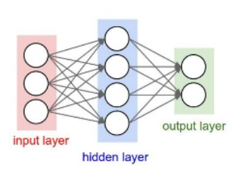

Projekt "Kamień, Papier,
Nożyce"
Podstawy Reprezentacji
i Analizy Danych
18.01.2023
Członkowie zespołu: Cybulski Dawid, Petrashevich Ulyana,
Sekula Sebastian
Projekt polega na stworzeniu algorytmu rozpoznającego gesty w grze
"Kamień, Papier, Nożyce"("Rock, Paper, Scissors").
Dane wykorzystane do wytrenowania modelu: https://www.kaggle.com/datasets/drgfreeman/rockpaperscissors?datasetId=107582&sortBy=voteCount.
Do dyspozycji zbiór 2 188 obrazów kolorowych, w tym 712 z gestem
"Papier", 726 z gestem "Kamień", 750 z gestem "Nożyce". Rozmiar obrazów:
300x200 pikseli.
Podjęliśmy decyzję, aby rozwiązać zadanie poprzez model uczenia sieci
neuronowych, ponieważ:
- Sieć może być wykorzystana dla innych danych z podziałem na 3
klasy.
- Nie musimy przeprowadzać analizy, model sam wyznacza części
charakterystyczne.
- Wyszkolony na dobrych danych jest bardziej odporny na przypadki
"niejednoznaczne", np. ręka nie jest widoczna w całości.
- Mamy dostęp do dużej ilości materiałów pomocniczych.
- Sztuczna inteligencja jest popularna we współczesnym świecie.
Wgranie potrzebnych bibliotek
import tensorflow as tf
import matplotlib.pyplot as plt
import matplotlib.image as mpimg
from tensorflow.keras.preprocessing.image import ImageDataGenerator
from tensorflow.keras.utils import to_categorical
import os
PATH = os.getcwd()
W tym momencie zaczyna się wczytywanie i dodatkowa modyfikacja danych
wejściowych, aby otrzymać dane, które w sposób najkorzystniejszy (to
jest przy niedługim czasie, a przy dobrej jakości) pozwolą nam
wytrenować model rozpoznawania obrazów.
Mamy możliwość swoimi oczami przeanalizować dostępne obrazy w
folderze. Dlatego wiemy, że większość obrazów mają jednakową postać:
ręka jest w środku, dobrze widoczna, prosto do kamery. Ale na niektórych
obrazach ręka jest ucięta albo obrócona. Taki zestaw jest dobry dla
trenowania, bo nauczy model poprawnie rozpoznawać nie tylko absolutnie
przejrzyste przypadki.
Lecz załóżmy, że dane mogą się zmienić i "nietypowych" obrazków już
nie będzie albo nie możemy sprawdzić, czy są. ImageDataGenerator przy
wczytaniu losowo wybiera obrazy i przekształca je - zmienia perspektywę,
przybliża, odbija, przesuwa i t.p. - znaczy generuje nam właśnie
przypadki "nietypowe".
train_data - instancja generatora obrazów z konkretnymi parametrami
(odpowiada za późniejszą obróbkę obrazów). Wartości parametrów zostały
podane zgodnie z przykładem na stronie(https://www.tensorflow.org/api_docs/python/tf/keras/preprocessing/image/ImageDataGenerator):
nie duże i nie małe:
- rescale - po zakończeniu wszystkich przekształceń
pomnaża dane przez podaną wartość.
- rotation_range - zakres stopni obrotu losowo
wybranego obrazu.
- width_shift_range - zakres przesunięcia
poziomowego(w naszym przypadku mierzony w częściach szerokości obrazu)
losowo wybranego obrazu.
- height_shift_range - zakres przesunięcia
pionowego(w częściach wysokości obrazu) losowo wybranego obrazu.
- shear_range - kąt zmiany perspektywy(w stopniach, w
ruchu przeciwnym do wskazówek zegara) losowo wybranego obrazu. Przykład
zmiany perspektywy:
 Źródło: https://en.wikipedia.org/wiki/Shear_force
Źródło: https://en.wikipedia.org/wiki/Shear_force
- zoom_range - zakres przybliżenia([1-0.2, 1+0.2])
losowo wybranego obrazu.
- horizontal_flip - dodaje możliwość poziomego
lustrzanego odbicia losowego obrazu.
- fill_mode='nearest' - przy niektórych z
przekształceń w obrazie znajdą się dane bez wartości(np. przesunięcie,
zmiana perspektywy), dla takich danych przypiszemy wartości komórek
znajdujących się najbliżej.
- validation_split- część obrazów, która będzie
zarezerwowana jako dane dla sprawdzenia modelu. W naszym przypadku część
walidacyjna stanowi 20% wszystkich obrazów. Nie jest to za mało co
pomoże dobrze określić poprawność działania modelu, ale też nie jest to
za duża ilość co nie ograniczy zdolności poznawczych w trakcie
nauki.
train_generator - przy podanej ścieżce do folderu z danymi, pozyskuje
je tworząc "batche" (to jest grupy obrazów), które będą wykorzystane do
wytrenowania modelu.
directory - ścieżka do folderu z odpowiednio
oznaczonymi obrazami.
class_mode - argument w swojej domyślnej formie
zawierający wartość "categorical" odpowiada to za prawidłowe rozpozanie
danych - gdzie dane są poprawnie opisane - już mają swoje etykiety (w
naszym przypadku są w odpowiednio nazywanych folderach.
batch_size - jeśli mówimy o tworzeniu grup
obrazów, to można też określić wielkość tych grup i właśnie za to
odpowiada owy argument (domyślnie ma wielkość 32).
target_size - jest to rozmiar, do jakiego będzie
sprowadzane wczytane kolejno obrazy.
subset='training' - wczytuje odpowiednio
wcześniej oznaczone dane do treningu.
validation_data - jest instancją generatora obrazów, tym razem z
mniejszą ilością parametrów. Jest to potrzebne po to, aby pozyskiwać
obrazy w niezmienionej formie, albowiem model będzie rozpoznawał
oryginalne obrazy, a nie wstępnie przetworzone - mogłoby to się odbić na
poprawności wytrenowanego modelu.
validation_generator - pozyskuje obrazy tworząc "batche", które będą
wykorzystane do sprawdzenia poprawności działania modelu.
- subset='validation' - wczytuje odpowiednio
wcześniej oznaczone dane do walidacji.
main_dir = "rps-cv-images"
train_data = ImageDataGenerator( rescale = 1.0/255,
rotation_range=20,
width_shift_range=0.2,
height_shift_range=0.2,
shear_range=0.2,
zoom_range=0.2,
horizontal_flip=True,
fill_mode='nearest',
validation_split=0.2
)
train_generator = train_data.flow_from_directory(main_dir,
target_size=(60, 40),
subset='training')
validation_data = ImageDataGenerator(rescale = 1.0/255,
validation_split=0.2)
validation_generator = validation_data.flow_from_directory(main_dir,
target_size=(60, 40),
subset='validation')
Found 1751 images belonging to 3 classes.
Found 437 images belonging to 3 classes.
Teraz zaczyna się tworzenie splecionej sieci neuronowej.
Spleciona sieć neuronowa(CNN) działa podobnie do mózgu człowieka -
rozpoznaje obiekty na obrazie poprzez rozpoznanie części i relacji
pomiędzy nimi.
- Część obrazu o rozmiarach, równych rozmiarom filtru, porównuje się z
filtrem poprzez sumowanie mnożeń wartości piksela w części obrazu o
wartość piksela w filtrze na tym samym miejscu. Dodając stałą "bias
term", odpowiadający za przesunięcie krzywej do prawej lub strony,
otrzymujemy wynik, który umieszczamy w nowej warstwie. Dalej robimy to
samo, ale przesuwamy część obrazu o 1 krok (zazwyczaj 1 piksel).
 Źródło: https://youtu.be/HGwBXDKFk9I
Źródło: https://youtu.be/HGwBXDKFk9I
Otrzymaną warstwę przetwarzamy za pomocą funkcji relu. Ona
zapewni, że wszystkie ujemne wartości staną się zerami, dodatnie
pozostaną niezmienione.
 Źródło: https://youtu.be/HGwBXDKFk9I
Źródło: https://youtu.be/HGwBXDKFk9I
Za pomocą nowego filtra (MaxPooling) wyciągamy z oddzielnych
części (zwyczajnie o rozmiarach 2x2) warstwy wartości maksymalne i
umieszczamy w nowej warstwie. To skutkuje odnalezieniem części obrazów,
w których filtr był najbardziej podobny do obrazu.
 Źródło: https://youtu.be/HGwBXDKFk9I
Źródło: https://youtu.be/HGwBXDKFk9I
Spłaszczamy warstwę, otrzymując jednowymiarowy wektor. Warstwa
Dense (albo warstwa gęsta) łączy wszystkie swoje neurony z każdą
wartością w wektorze. Każde takie połączenie ma swoją wagę. Pomnażając
wartość w wektorze o wagę połączenia, sumując wyniki i dodając wartość
bias otrzymujemy wynik odpowiadający poziomowi aktywacji neuronu.
Funkcja softmax pozwoli na doprowadzenie wartości do postaci, gdzie je
summa jest równa 1, pozwalając traktować wartości jako
prawdopodobieństwo przynależności obrazu do kategorii.
 Źródło: https://www.databricks.com/glossary/dense-tensor
 Źródło:
https://youtu.be/HGwBXDKFk9I
Źródło:
https://youtu.be/HGwBXDKFk9I
W trakcie trenowania modelu neurony dobierają względem siebie lepsze
wagi, aby lepiej rozpoznawać obraz.
from tensorflow.keras.layers import Conv2D, BatchNormalization, MaxPooling2D, Flatten, Dense
from tensorflow.nn import relu, softmax
Teraz tworzony jest model "Sekwencyjny" - jest to typ modelu, który
opiera się o kolejno tworzone warstwy, które w odpowiedni sposób
przetwarzają obraz, aby ostatecznie go rozpoznać.
W naszym przypadku model składa się z warstw:
Conv2D - warstwa odpowiedzialna za wyznaczenie
filtrów i sprawdzenie ich dopasowań w całym obrazie.
- Pierwszym argumentem jest liczba filtrów, które będą porównywane z
częściami obrazu.
- Rozmiar filtra.
- activation=relu - jest to funkcja, która powstałe w
macierzy ujemne wyniki zmienia na 0.
- input_shape=(60, 40, 3) - argument określający rozmiar
obrazów przyjmowanych przez warstwę.
- padding='same' - dodanie tego parametru uzupełnia macierz
wejściową zerami na brzegach w taki sposób, aby po nałożeniu na nią
filtra, rozmiar macierzy wyjściowej był taki sam jak oryginalny rozmiar
macierzy wejściowej (podczas nakładania filtra na macierz tracona jest
część informacji, dodawanie zer pozwala tego uniknąć). (https://www.youtube.com/watch?v=PGBop7Ka9AU)
BatchNormalization - zawęża gamę wejściowych
liczb do przedziału <0,1>. Poprawia późniejsze określanie wag
neuronów. (https://www.youtube.com/watch?v=yXOMHOpbon8),
MaxPooling2D - warstwa pozyskująca największe
wartości z grup elementów wcześniej powstałej macierzy.
Flatten - warstwa w oparciu o powstałą macierz
tworząca jednowymiarowy wektor.
Dense - warstwa odpowiedzialna za prawidłowe
określanie ważności cech poszczególnych komórek wcześniej powstałej
tablicy w celu poprawnej kategoryzacji wczytywanych obiektów.
- Pierwszy argument jest długością zwracanej tablicy.
- activation=softmax - funkcja sprawiająca, że zwracane
wartości sumują się do liczby 1. Dzięki temu możemy owe wartości
traktować jako prawdopodobieństwo.
model = tf.keras.models.Sequential([
Conv2D(64, (5,5), activation=relu,input_shape=(60, 40, 3), padding = 'same'),
BatchNormalization(),
Conv2D(64, (3,3), activation=relu,padding = 'same'),
MaxPooling2D(2,2),
Conv2D(128, (3,3), activation=relu,padding = 'same'),
MaxPooling2D(2,2),
Flatten(),
Dense(256, activation=relu),
Dense(3, activation =softmax)
])
model.summary()
Model: "sequential_1"
_________________________________________________________________
Layer (type) Output Shape Param #
=================================================================
conv2d_3 (Conv2D) (None, 60, 40, 64) 4864
batch_normalization_1 (Batc (None, 60, 40, 64) 256
hNormalization)
conv2d_4 (Conv2D) (None, 60, 40, 64) 36928
max_pooling2d_2 (MaxPooling (None, 30, 20, 64) 0
2D)
conv2d_5 (Conv2D) (None, 30, 20, 128) 73856
max_pooling2d_3 (MaxPooling (None, 15, 10, 128) 0
2D)
flatten_1 (Flatten) (None, 19200) 0
dense_2 (Dense) (None, 256) 4915456
dense_3 (Dense) (None, 3) 771
=================================================================
Total params: 5,032,131
Trainable params: 5,032,003
Non-trainable params: 128
_________________________________________________________________
Aby model nie był zbyt dokładny - rozpoznawał prawidłowo reguły, a
nie same obrazy na których był ćwiczony - musimy zmniejszyć tempo
uczenia naszego modelu.
from keras.callbacks import ReduceLROnPlateau
Funkcja ReduceLROnPlateau jest rozwiązaniem naszego problemu "zbyt
dopasowanego modelu" (https://keras.io/api/callbacks/reduce_lr_on_plateau/).
Parametry:
monitor='val_acc' - ten argument mówi o tym, że
w momencie, kiedy metryka poprawności rozpoznawania danych wejściowych
nie poprawia się, zmniejszane jest tempo uczenia.
patience=2 - ilość epok, które muszą przejść,
aby redukcja tempa uczenia zaczęła być wprowadzana w życie.
verbose=1 - każdy raz przy uruchomieniu
zmniejszania tempa będzie wyświetlany odpowiedni komunikat.
factor=0.5 - współczynnik określający zmianę
tempa uczenia (nowe_tempo = factor * stare_tempo).
min_lr=0.000003 - dolny limit tempa uczenia -
wolniej nie będzie.
learning_rate_reduction = ReduceLROnPlateau(monitor='val_accuracy',
patience=2,
verbose=1,
factor=0.5,
min_lr=0.000003)
W tym momencie możemy już się podjąć uczenia naszego modelu.
Metoda "compile" rozpoczyna owy proces. Parametry:
loss='categorical_crossentropy' - funkcja straty
- owa funkcja w oparciu o przewidywaną kategorię dla danego obrazi i
obecny wynik kategoryzacji określa jak bardzo dobrze model klasyfikuje
obiekty. Im mniejsza wartość owej funkcji, tym model działa lepiej. Jest
to miara odchylenia od oczekiwanej wartości. 'categorical_crossentropy'
jest typem funkcji wykorzystywanym w procesie obliczania funkcji straty
dla modeli, których zadaniem jest określanie kategorii obiektów.
Etykiety powstałe w wyniku działania tejże modelu opartym o ową funkcję
są zerami lub jedynką, w jasny sposób określając kategorię danego
obrazu. (https://gombru.github.io/2018/05/23/cross_entropy_loss/)
optimizer=Adam() - funkcja optymalizująca model
w oparciu o funkcję straty, w sposób taki, aby ta funkcja była jak
najmniejsza. Dlaczego Adam? Przez swoją złożoność obliczeniową i małe
wymagania pamięciowe jest idealny do pracy ze zbiorami danych o dużej
ilości parametrów. (https://www.youtube.com/watch?v=JhQqquVeCE0)
metrics=['accuracy'] - parametr na podstawie
którego model będzie się uczył.
Metoda "fit" - trenuje zadany model.
Pierwszym argumentem jest zbiór danych testowych.
epochs=15, oznacza liczbę epok, potrzebnych do
wytrenowania modelu.
verbose=1, pokazuje informacje o postępach
treningu.
validation_data - zbiór danych
walidacyjnych.
callbacks=[learning_rate_reduction] - argument
określający, funkcje do których odwołuje się model w trakcie uczenia. W
naszym przypadku do funkcji zapobiegającej przetrenowaniu
modelu.
W kodzie inspiracyjnym pominięty był atrybut padding='same' w
pierwszej warstwie m modelu co wpływało na pojawienie się błędu o braku
pozwolenia na optymalizację poprzez rozszerzenie macierzy o atrybut
padding, pozyskanych dalej macierzy przez warstwę Conv2D
(zmodyfikowanych przez parametr padding)
model.compile(loss = 'categorical_crossentropy', optimizer= tf.keras.optimizers.Adam(), metrics=['accuracy'])
history = model.fit(train_generator,
epochs = 15,
verbose = 1,
validation_data = validation_generator,
callbacks=[learning_rate_reduction])
Epoch 1/15
55/55 [==============================] - 27s 475ms/step - loss: 1.3192 - accuracy: 0.4654 - val_loss: 1.0087 - val_accuracy: 0.4485 - lr: 0.0010
Epoch 2/15
55/55 [==============================] - 26s 462ms/step - loss: 0.6222 - accuracy: 0.7470 - val_loss: 0.8354 - val_accuracy: 0.7368 - lr: 0.0010
Epoch 3/15
55/55 [==============================] - 27s 483ms/step - loss: 0.4657 - accuracy: 0.8332 - val_loss: 0.5975 - val_accuracy: 0.9474 - lr: 0.0010
Epoch 4/15
55/55 [==============================] - 24s 430ms/step - loss: 0.3311 - accuracy: 0.8789 - val_loss: 0.5643 - val_accuracy: 0.9565 - lr: 0.0010
Epoch 5/15
55/55 [==============================] - 23s 409ms/step - loss: 0.2539 - accuracy: 0.9086 - val_loss: 0.2693 - val_accuracy: 0.9725 - lr: 0.0010
Epoch 6/15
55/55 [==============================] - 22s 406ms/step - loss: 0.2351 - accuracy: 0.9126 - val_loss: 0.2686 - val_accuracy: 0.9588 - lr: 0.0010
Epoch 7/15
55/55 [==============================] - ETA: 0s - loss: 0.2476 - accuracy: 0.9172
Epoch 7: ReduceLROnPlateau reducing learning rate to 0.0005000000237487257.
55/55 [==============================] - 22s 407ms/step - loss: 0.2476 - accuracy: 0.9172 - val_loss: 0.2805 - val_accuracy: 0.9565 - lr: 0.0010
Epoch 8/15
55/55 [==============================] - 22s 405ms/step - loss: 0.1558 - accuracy: 0.9463 - val_loss: 0.1178 - val_accuracy: 0.9748 - lr: 5.0000e-04
Epoch 9/15
55/55 [==============================] - 23s 409ms/step - loss: 0.1315 - accuracy: 0.9577 - val_loss: 0.0896 - val_accuracy: 0.9840 - lr: 5.0000e-04
Epoch 10/15
55/55 [==============================] - 22s 406ms/step - loss: 0.0869 - accuracy: 0.9743 - val_loss: 0.0288 - val_accuracy: 0.9908 - lr: 5.0000e-04
Epoch 11/15
55/55 [==============================] - 22s 406ms/step - loss: 0.0853 - accuracy: 0.9720 - val_loss: 0.0323 - val_accuracy: 0.9863 - lr: 5.0000e-04
Epoch 12/15
55/55 [==============================] - ETA: 0s - loss: 0.0851 - accuracy: 0.9732
Epoch 12: ReduceLROnPlateau reducing learning rate to 0.0002500000118743628.
55/55 [==============================] - 23s 408ms/step - loss: 0.0851 - accuracy: 0.9732 - val_loss: 0.0403 - val_accuracy: 0.9908 - lr: 5.0000e-04
Epoch 13/15
55/55 [==============================] - 22s 407ms/step - loss: 0.0515 - accuracy: 0.9829 - val_loss: 0.0196 - val_accuracy: 0.9931 - lr: 2.5000e-04
Epoch 14/15
55/55 [==============================] - 22s 406ms/step - loss: 0.0594 - accuracy: 0.9760 - val_loss: 0.0166 - val_accuracy: 0.9931 - lr: 2.5000e-04
Epoch 15/15
55/55 [==============================] - 24s 439ms/step - loss: 0.0928 - accuracy: 0.9692 - val_loss: 0.0132 - val_accuracy: 0.9977 - lr: 2.5000e-04
%matplotlib inline
acc = history.history['accuracy']
val_acc = history.history['val_accuracy']
loss = history.history['loss']
val_loss = history.history['val_loss']
epochs = range(len(acc))
plt.plot(epochs, acc, 'r', label='Training accuracy')
plt.plot(epochs, val_acc, 'b', label='Validation accuracy')
plt.title('Training and validation accuracy')
plt.legend()
plt.figure()
plt.plot(epochs, loss, 'r', label='Training Loss')
plt.plot(epochs, val_loss, 'b', label='Validation Loss')
plt.title('Training and validation loss')
plt.legend()
plt.show()
import matplotlib.pyplot as plt
from sklearn import metrics
from sklearn.metrics import confusion_matrix, classification_report
test_data = ImageDataGenerator(rescale = 1.0/255)
test_generator = test_data.flow_from_directory(main_dir,
target_size=(60, 40),
shuffle = False)
probs = model.predict(test_generator)
preds = probs.argmax(axis = -1)
y_test = test_generator.labels
accuracy = metrics.accuracy_score(y_test, preds)
print("Dokładność systemu: %.2f procent" % (accuracy*100))
cm = confusion_matrix(y_test,preds)
cm_display = metrics.ConfusionMatrixDisplay(confusion_matrix = cm, display_labels = ["Paper", "Rock", "Scissors"])
cm_norm =confusion_matrix(y_test,preds, normalize='pred')
cm_norm_display = metrics.ConfusionMatrixDisplay(confusion_matrix = cm_norm, display_labels = ["Paper", "Rock", "Scissors"])
cm_display.plot()
cm_norm_display.plot()
plt.show()
Found 2188 images belonging to 3 classes.
69/69 [==============================] - 7s 95ms/step
Dokładność systemu: 99.82 procent
Jak możemy zaobserwować na powyższych wykresach, nasz model po
wytrenowaniu osiąga niemalże stuprocentową skuteczność co jest bardzo
zadowalającym wynikiem.
Z macierzy konfuzji nie wynikają wielkie wnioski, bo błędne
kategoryzowanie przez model sprowadza się do nikłej ilości przypadków,
co może być wynikiem różnego typu czynników jak np. podobieństwa obrazów
wynikającego ze zbyt dużego przeskalowania ich na wejściu, czy też po
prostu niedostatecznego wyuczenia modelu.
Dlaczego taka budowa modelu, a nie inna?
- Pozbycie się drugiej warstwy Conv2D znacząco obniża umiejętności
klasyfikacyjne obrazów nie należących do zbioru testowego (filtry nie
zostały udoskonalone)
- Nie używanie funkcji batch normalization obniża późniejsze
umiejętności uczenia się modelu. Sam wykres również nam to obrazuje
- Usunięcie paddingów sprawia, że model w trakcie nauki, traci część
danych przy każdej filtracji (tworzeniu mapy cech). W wyniku tego model
przy mniejszej liczbe epok uczyłby się zdecydowanie słabiej.
- Zmniejszenie neuronów warstwy Dense znacząco ogarnicza umiejętności
kategoryzacji obiektów.
- Zwiększenie neuronów nie wpływa znacząco na jakość klasyfikacji
modelu. Może conajwyżej troszkę go osłabić ze względu na mniejszą
generalizację pewnych zależności.
import numpy as np
from PIL import Image
#Funkcje używane do wyświetlania obrazów
def pliob(listaobr, ile_k = 1, listatyt = [], wart_dpi = 100, osie = False):
# wyswietla liste obrazow kolorowych lub s skali szarosci
rozm_obr = 5
ile = len(listaobr)
if len(listatyt) == 0:
listatyt = [' ']*ile
ile_w = np.ceil(ile / ile_k).astype(int)
figsize_k = rozm_obr*ile_k
figsize_w = rozm_obr*ile_w
plt.figure(figsize=(figsize_k,figsize_w), dpi = wart_dpi)
for i in range(0,ile):
if isinstance(listaobr[i],np.ndarray):
plt.subplot(ile_w,ile_k,i+1)
pokaz(listaobr[i], listatyt[i], osie)
plt.show()
def pokaz(im, tytul = "", osie = False):
if not(osie):
plt.axis("off")
plt.imshow(im)
plt.title(tytul)
models_dir = PATH + "/data/model"
model_obecny = mpimg.imread(models_dir + "_obecny.png")
model_obecny_plot = mpimg.imread(models_dir + "1plot.png")
model2 = mpimg.imread(models_dir + "2.png")
model2plot = mpimg.imread(models_dir + "2plot.png")
model3 = mpimg.imread(models_dir + "3.png")
model3plot = mpimg.imread(models_dir + "3plot.png")
model4 = mpimg.imread(models_dir + "4.png")
model4plot = mpimg.imread(models_dir + "4plot.png")
model8 = mpimg.imread(models_dir + "8.png")
model8plot = mpimg.imread(models_dir + "8plot.png")
model9 = mpimg.imread(models_dir + "9.png")
model9plot = mpimg.imread(models_dir + "9plot.png")
pliob([model_obecny, model_obecny_plot, model2, model2plot,
model3, model3plot, model4, model4plot,
model8, model8plot, model9, model9plot],
4,
['Obecny Model', "", 'Bez drugiej warstwy Conv2D', '',
"Bez drugiej warstwy Conv2D i normalizacji batcha", "","Bez paddingów", "",
"Piewszy dense -> 128", "", "Pierwszy dense -> 512", ""])
Praktyczne zastosowanie modelu do rozpoznawiania obrazów
print("Etykiety klas:")
print(train_generator.class_indices , '\n' , '\n')
image = Image.open(PATH + "/rps-cv-images/paper/04l5I8TqdzF9WDMJ.png")
image_new = image.resize((40,60))
image_array = np.array(image_new)
holder = []
holder.append(image_array)
holder = np.array(holder)
print("Papier, Wynik klasyfikacji:", '\n')
print(model.predict(holder), '\n', '\n')
image1np = mpimg.imread(PATH + "/rps-cv-images/paper/04l5I8TqdzF9WDMJ.png")
image3 = Image.open(PATH + "/rps-cv-images/rock/00nKV8oHuTGi20gq.png")
image_new3 = image3.resize((40,60))
image_array3 = np.array(image_new3)
holder3 = []
holder3.append(image_array3)
holder3 = np.array(holder3)
print("Kamień, Wynik klasyfikacji:", '\n')
print(model.predict(holder3), '\n', '\n')
image3np = mpimg.imread(PATH + "/rps-cv-images/rock/00nKV8oHuTGi20gq.png")
image2 = Image.open(PATH + "/rps-cv-images/scissors/0657zSfiTYzP2jrl.png")
image_new2 = image2.resize((40,60))
image_array2 = np.array(image_new2)
holder2 = []
holder2.append(image_array2)
holder2 = np.array(holder2)
print("Nożyce, Wynik klasyfikacji:",'\n')
print(model.predict(holder2),'\n', '\n')
image2np = mpimg.imread(PATH + "/rps-cv-images/scissors/0657zSfiTYzP2jrl.png")
pliob([image1np, image3np, image2np], 3, ['papier', 'kamień', 'nożyce'])
Etykiety klas:
{'paper': 0, 'rock': 1, 'scissors': 2}
Papier, Wynik klasyfikacji:
1/1 [==============================] - 0s 170ms/step
[[1. 0. 0.]]
Kamień, Wynik klasyfikacji:
1/1 [==============================] - 0s 53ms/step
[[0. 1. 0.]]
Nożyce, Wynik klasyfikacji:
1/1 [==============================] - 0s 70ms/step
[[0. 0. 1.]]